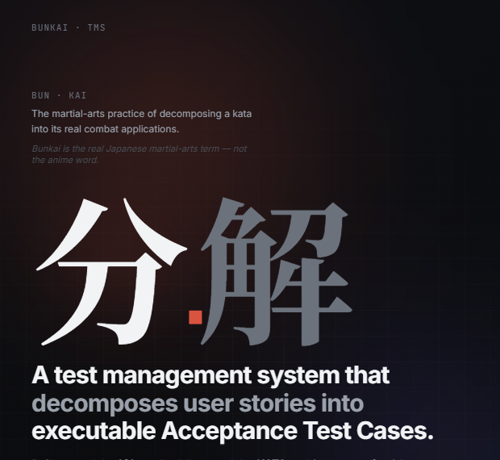
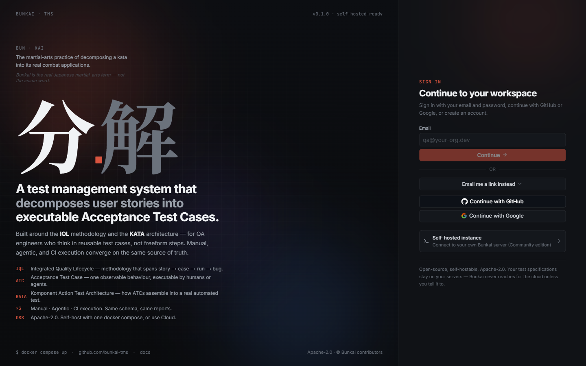

Bunkai QA · Serie de entrenamiento
Analista funcional y de QA, entrenando un rol híbrido con IA agéntica sobre un producto real.
Contexto
Analista funcional + analista de QA, aplicando ambos perfiles sobre un repositorio real, con IA agéntica como compañera de trabajo, no como atajo.
el recorrido
Practicando cada etapa manual de un pipeline de QA asistido por IA sobre un producto real, antes de llegar a la automatización.
sobre qué estoy practicando

# qué es sistema de gestión de pruebas multi-tenant: historia de usuario → criterio de aceptación → ATC ejecutable → corrida → defecto # su alcance trazabilidad forzada por el propio esquema — un caso de prueba no puede existir sin apuntar a un criterio. no depende de la disciplina del equipo # para quién personas, scripts, integraciones continuas, agentes de IA # donde vive staging-upexbunkai.vercel.app
cómo lo ordeno
Actualizar lo que ya sabía como analista, sin IA de por medio.
Sumar ingeniería de contexto, harness y agentes — Claude Code como herramienta de avanzada.
Próximo horizonte: agentes que resuelven todo el circuito del rol.
Mi criterio y aprendizaje real sobre cada skill — presente en cada deck.
el hilo central
El hilo que conecta los 4 pilares: un rol híbrido, entre el criterio humano y la asistencia de IA, demostrado skill a skill.
Próxima entrega
La skill que arranca todo: cómo se lee un proyecto entero desde cero, con evidencia, sin inventar nada.
por qué esto importa
La parte entrenable no es apretar un botón. Es saber qué pedir, juzgar lo que devuelve, y decidir cuándo profundizar. Eso es lo que estos decks van a mostrar, práctica por práctica.
serie en curso
`project-discovery` llega a continuación.